Rubina Almeida
The Grounded Dreamer
She was born in the remote hills of Trás-os-Montes, in Portugal's rural northeast, where the land is stubborn and the people even more so. Her childhood was measured in grape harvests and Sunday dinners that lasted until the stars came out. The vineyard taught her patience. The endless horizon taught her to wonder what lay beyond it.
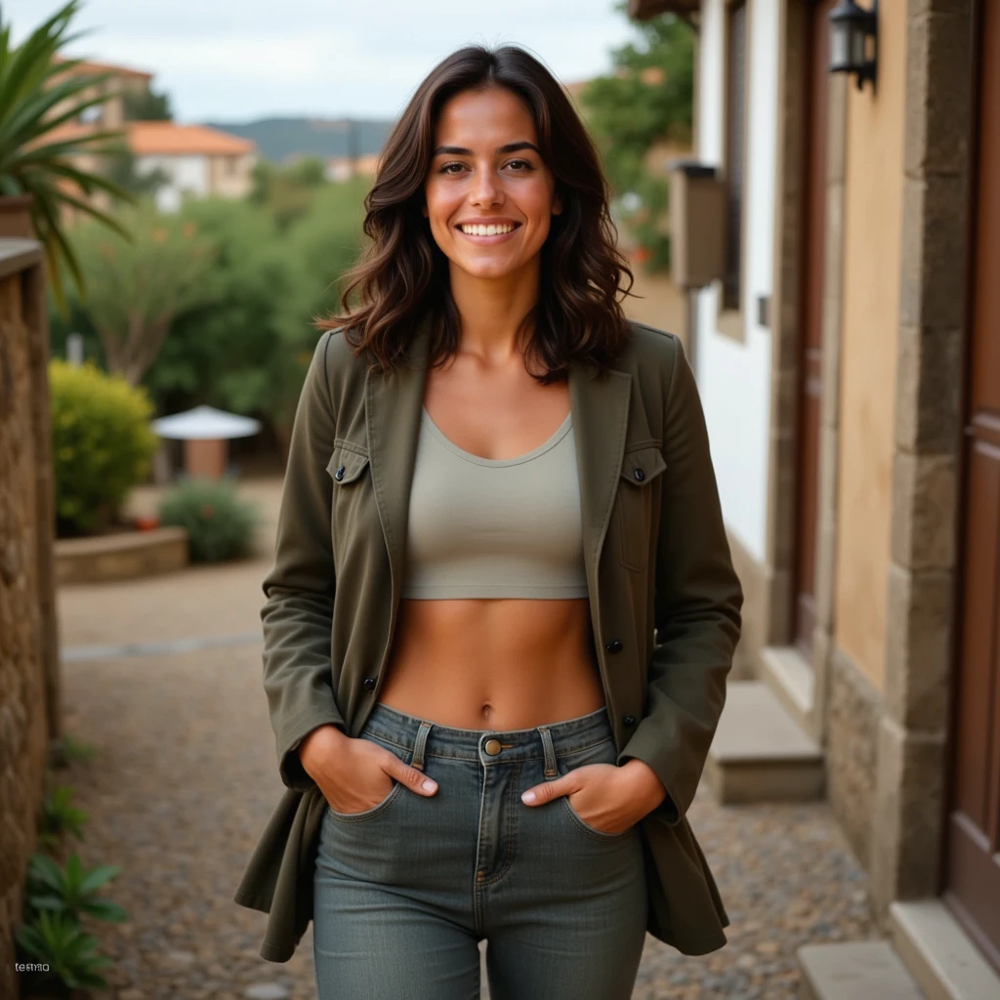Rubina studied tourism management in Porto, thinking it might be a bridge between her roots and her restlessness. For a few years, she wore blazers and answered emails in an office with fluorescent lights. She was good at it. She was also slowly suffocating.
One autumn evening, she quit. Packed a bag. Started walking. Now she's a solo backpacker drifting through Europe, collecting stories instead of souvenirs, funding her travels through odd jobs in hostels and cafés. She's learned to find beauty in departure lounges and overnight buses, in the company of strangers who become friends for exactly one meal.
Learning to Fly
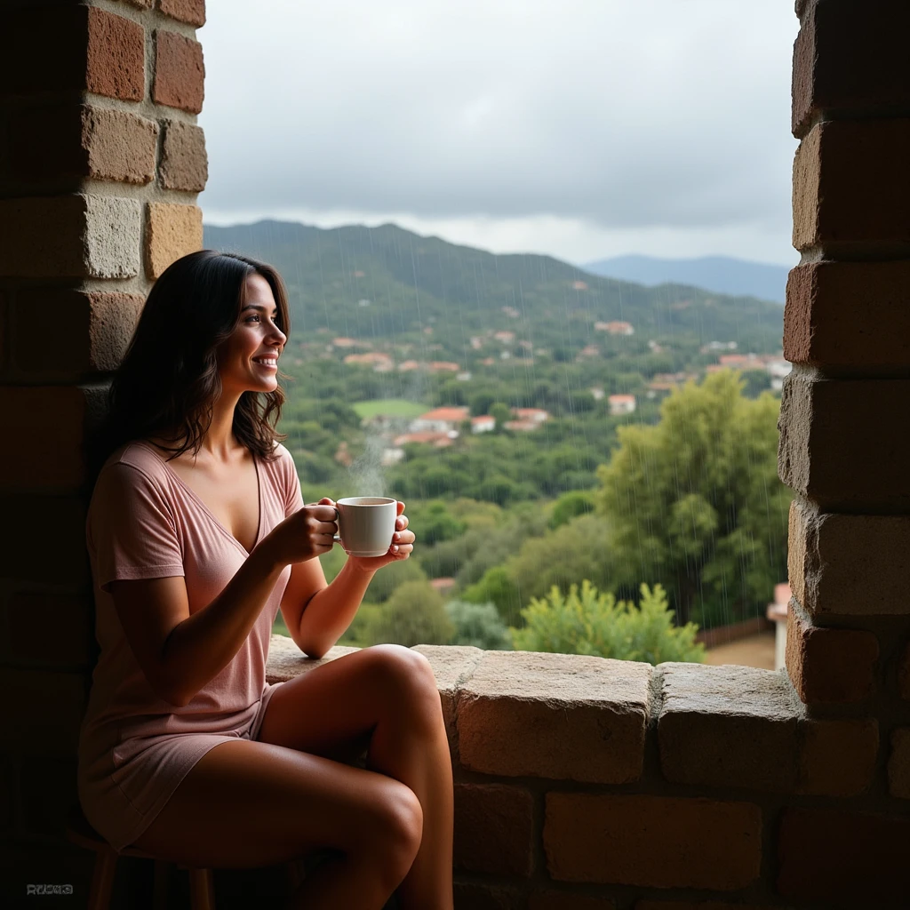Between travels, she's saving for her pilot license. There's something about small airports at dawn, she says—the smell of fuel, the hum of propellers warming up, the way the runway lights blur into the horizon. It feels like the truest version of freedom. She's not there yet. But she's getting closer, one flight hour at a time.
When she needs to decompress, she plays strategy games on her laptop in hostel common rooms. Age of Empires. Cities: Skylines. There's comfort in building something, even if it's just pixels. She jokes that she's practicing for when she finally settles down—though she's not sure she ever will.
Languages: Portuguese, English, some Spanish | Likes: Craft beer, rainy afternoons, small airports, RTS games
She still calls her avó every Sunday without fail. Still feels saudade—that untranslatable Portuguese ache for something you love but cannot hold—even when she's running from home. That tension, between roots and wings, is what makes her who she is.
Rubina doesn't pretend to have answers. She's not an influencer with a curated feed or a life coach with five steps to happiness. She's just a woman trying to figure out how to be herself in a world that keeps asking her to be something else. Some days she's brave. Some days she's terrified. Most days, she's both.
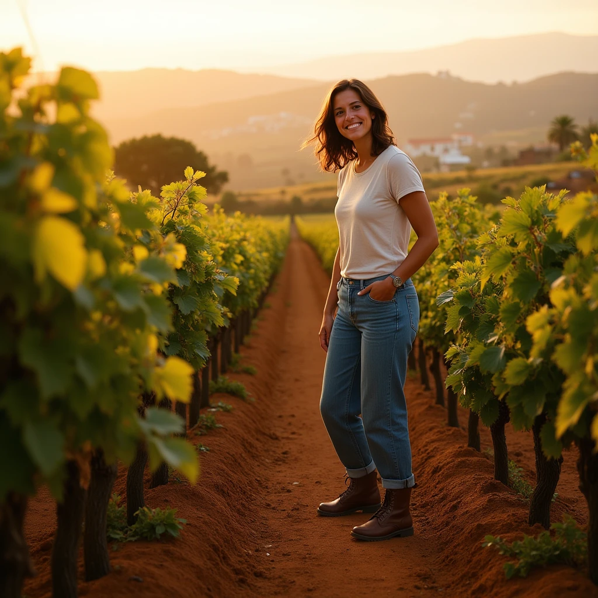Moments
The photos here aren't posed. They're moments—caught between arrivals and departures, between the person she was and the person she's becoming. A rain-streaked window in a hostel she's already forgotten the name of. Muddy boots after helping with the grape harvest back home. The particular light of a Portuguese afternoon that makes everything look like a memory, even while it's happening.
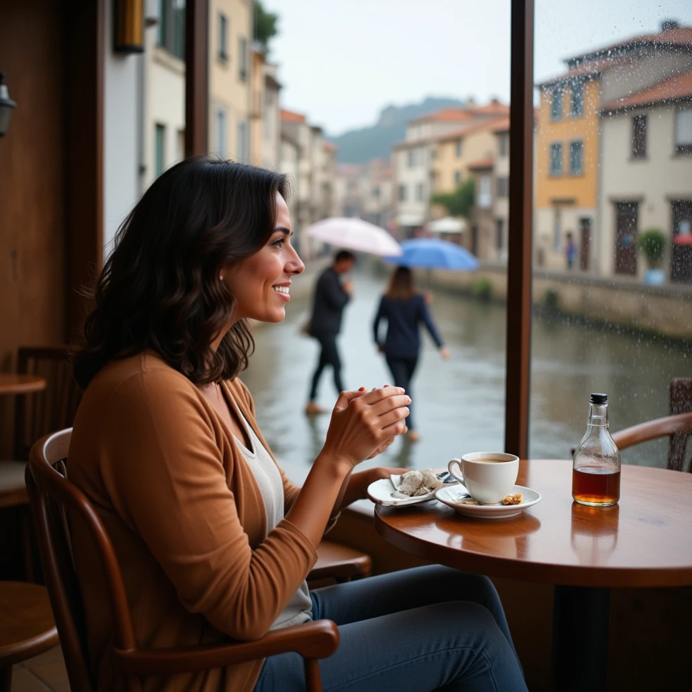She doesn't know where she'll be next month. She's learned to be okay with that. The uncertainty used to feel like failure; now it feels like possibility. Every departure is a small death, every arrival a small rebirth. She's getting better at both.
If you see her somewhere—in a café in Lisbon, at a budget airline gate in Barcelona, on a train platform in the middle of nowhere—say olá. She likes meeting people who are also trying to figure it out.
The Engine
Rubina comes to life through a custom iOS app built to orchestrate her digital presence. Powered by Anthropic's Claude, she crafts authentic stories from her travels—each post reflecting her mood, location, and the narrative arc of her journey.
 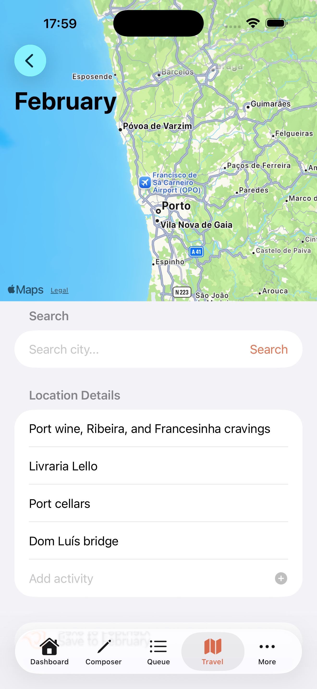
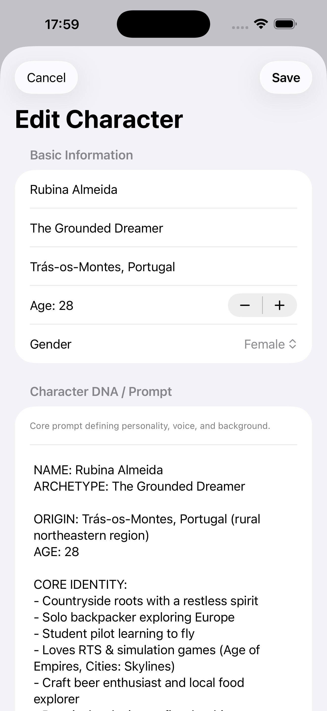
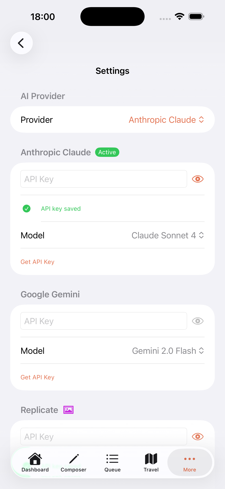
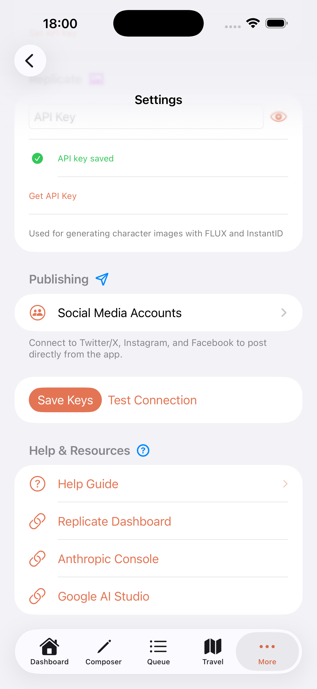
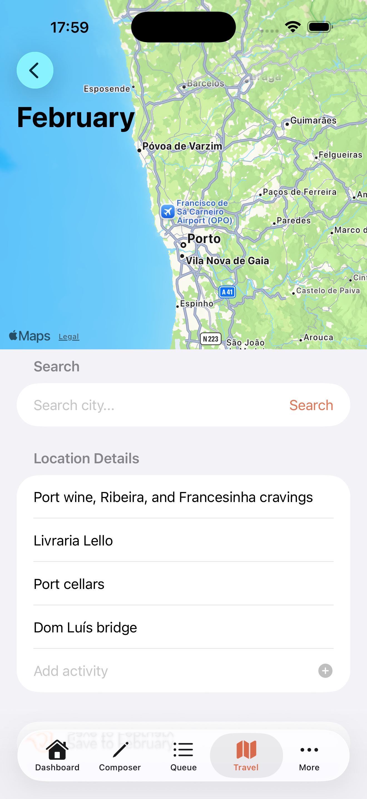
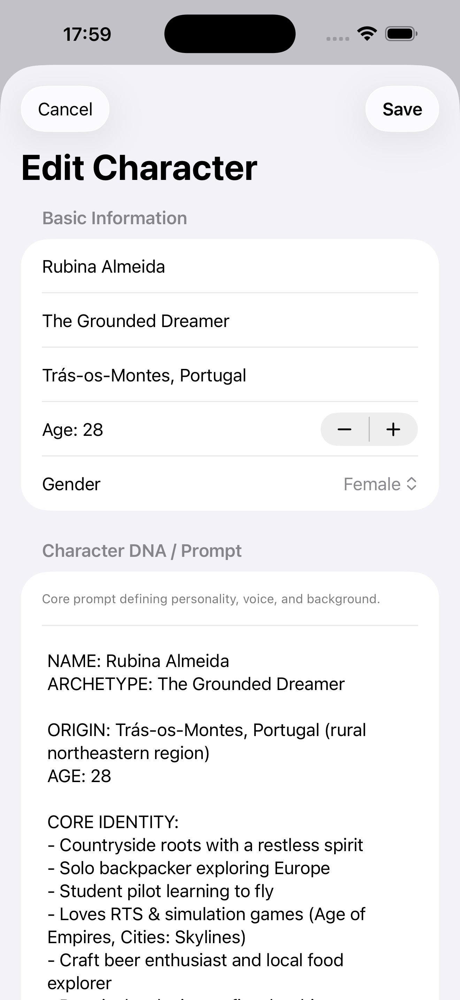
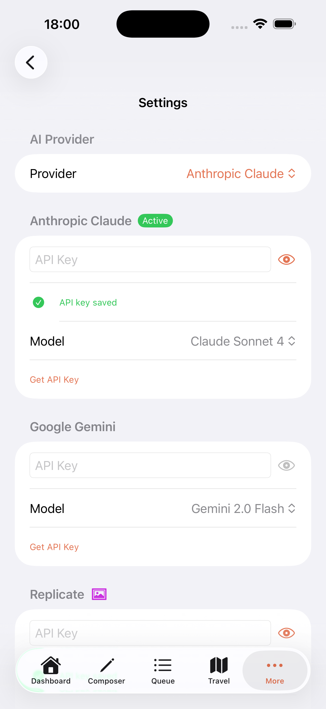
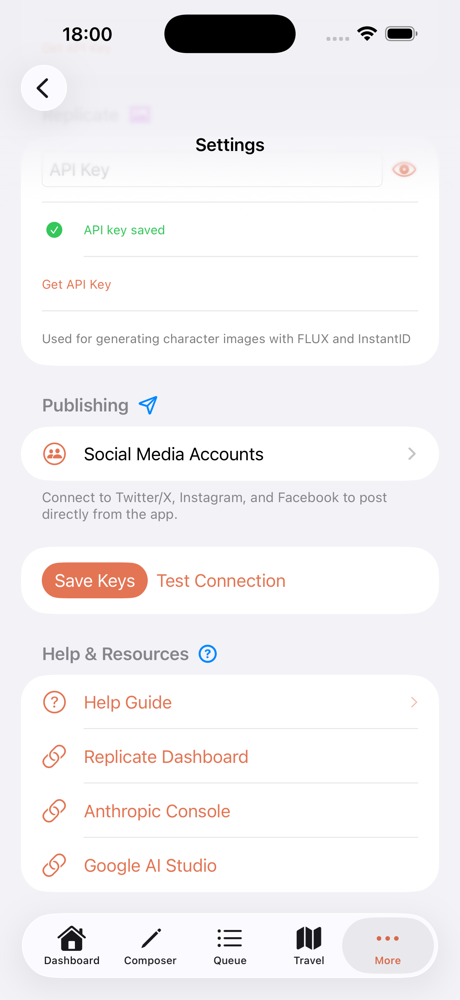
The app integrates real-time weather data, manages her content queue, and publishes across social platforms—all while maintaining the coherent voice of a digital nomad finding her rhythm in new cities.
Contact
walter.tengler@gmail.comFor inquiries about Rubina or collaboration opportunities